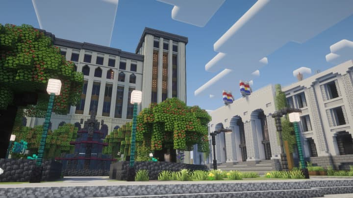
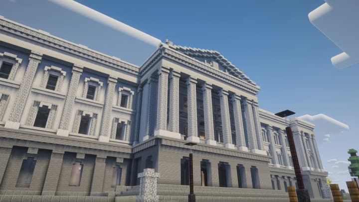
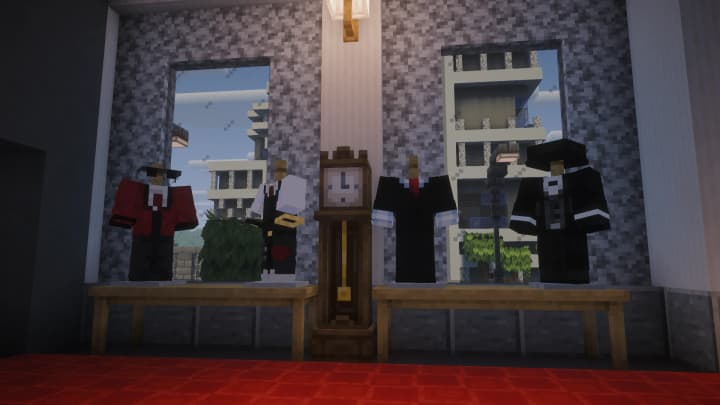

El launcher se repara solo
Si una descarga cortada dañó Minecraft o Forge, el launcher lo detecta, lo vuelve a bajar y reintenta sin que tengas que hacer nada.
- Antes de jugar revisa el juego y sus librerías contra las huellas oficiales de Mojang y de Forge, y reemplaza lo que esté dañado.
- Si Forge falla al armarse, lo borra, lo baja de cero y vuelve a abrir el juego una vez. Si falla de nuevo, te explica qué revisar.
- Nuevo en Ajustes → Registros: el último arranque, el crash report y los registros del juego, para leerlos, copiarlos o mandarlos al soporte.
- El aviso de «error de OpenGL» ya no sale con cualquier cierre: sólo cuando de verdad falla la placa de video.

INSTALAR y ACTUALIZAR, como en Steam
Cuando falta el modpack o hay una actualización, el botón principal lo dice en azul y hace sólo eso. Al terminar vuelve a ser JUGAR, en verde.
- La primera vez el botón dice INSTALAR y baja el modpack completo. Cuando hay cambios dice ACTUALIZAR y baja sólo lo nuevo.
- El launcher deja a Victoria Kingdom primera en tu lista de servidores, con la dirección correcta. Quien la escribía a mano con otro puerto caía en un servidor ajeno y veía «Cliente no compatible».
- Entrar desde el menú del juego ya no suma una entrada repetida cada vez. El resto de tu lista no se toca.

Nueva web y wiki de Victoria
Victoria estrena dirección propia, victoriakingdom.com, y una wiki con guías de cada sistema: banco, terrenos, vehículos, teléfono, trámites y más.
- La wiki tiene buscador: escribe «banco», «terreno» o «teléfono» y te lleva a la guía.
- La dirección anterior, victoriakingdom.pages.dev, lleva sola a la nueva.

El instalador trae siempre la última versión
El instalador de la web busca la versión más reciente del launcher, la descarga y comprueba que esté intacta antes de instalarla.
- Ya no se instala una versión vieja que después tenía que actualizarse: entras directo a la última.
- Puedes guardar el instalador. La próxima vez que lo abras también va a buscar la versión más nueva.
- Si la red falla justo al pedir los datos de las cuentas, el launcher usa un respaldo y te deja entrar igual.

Un launcher con los colores de Victoria
El rojo de la bandera, capturas del servidor en la pantalla de cuenta y el estado del servidor en vivo en Jugar.
- En Jugar ves si el servidor está en línea y cuánta gente hay, consultado de verdad.
- VALIDAR ARCHIVOS, al lado de JUGAR: deja los mods y la configuración del modpack como vienen, sin tocar tus mundos ni tus teclas.
- Las actualizaciones del launcher se instalan en silencio, sin volver a mostrar el asistente del instalador.
- Si el antivirus bloquea una actualización, el launcher sigue funcionando y te explica qué hacer.

Se terminó el /login
Tu cuenta ahora vive en el launcher: entras una vez y ya no escribes la contraseña dentro del juego.
- Con Minecraft original entras con Microsoft. Sin él, creas tu cuenta de Victoria con nombre, contraseña y correo, y la confirmas con un código de 6 números.
- La sesión dura 30 días y queda guardada cifrada en tu PC.
- La primera vez, el launcher te recomienda memoria, shaders y mods opcionales según tu PC, y te deja probar el micrófono.
- Las advertencias van en escalera y, si pasas un mes sin recibir ninguna, se te borra una.

Los autos vuelven a andar como antes
Los vehículos iban más lentos por un ajuste mal unificado. Ahora la velocidad la manda el servidor y no puede volver a desincronizarse.
- El Conquest, el Keeper y sus patrulleros cambian de marcha solos, como el resto.
- Sacar un auto del garaje lo devuelve con ruedas, asientos y motor, como lo guardaste.

Tu garaje y tus propiedades, en un panel
Los autos y los terrenos se administran desde un panel, estés donde estés. Y los NPC de servicio, por fin, conversan.
- Garaje: traba o destraba a distancia, marca tu auto en el mapa, elige quién puede usarlo, ponle nombre o véndelo.
- Usados en la concesionaria: compras lo que publican otros jugadores, y la plata le llega al vendedor aunque no esté conectado.
- Mis propiedades: llaves por persona, y para cada llave decides qué puede hacer esa persona.
- Llegan la limusina de Victoria Motors y los modelos de Belroft Motors.
- Primeros pasos, la primera misión para los recién llegados: el DNI, la tarjeta del banco y una vuelta por la concesionaria.
- La billetera se abre: tu DNI, tu saldo y seis lugares para billetes. Y se puede robar.

El Estado tiene tres poderes
El Gobierno publica la ley en el Boletín del Estado y reparte el presupuesto, y la Fiscalía y el Juzgado deciden las causas.
- Los edictos del Gobierno se ven en la portada de la app Victoria, firmados.
- El que acusa no juzga: el servidor comprueba que el juez no sea el fiscal de la causa.
- Seis apps del teléfono que no contestaban volvieron a funcionar, y el teléfono ya no se borra solo.
- Puedes armar tu propia tienda con cinco tablones, un cuarzo y un cofre, y dejarla vendiendo aunque no estés.

Un cajero de verdad y la tarjeta Platino
Las pantallas del cajero se rehicieron de cero, y llegó la tarjeta Platino: nominal, sólo la puede usar su titular.
- La tecla G abre el menú de interacción, en forma de rueda.
- Sin temperatura, sed ni vendas: lo de supervivencia que no aportaba al rol se fue.
- El fuego ya no se propaga, los mobs no rompen bloques y dormir no saltea la noche.
- Los autos y las armas ya no rompen la ciudad.

El mercado tiene oferta y demanda
Cuanto más se vende algo, menos vale. Lo raro paga, y lo que se satura se recupera solo con el tiempo.
- Ocho comerciantes, cada uno con su rubro: agricultura, verdulería, minería, cantería, silvicultura, pesca, caza y mística.
- La plata de cada venta va directo al banco.
- Las insignias y los rangos se ven en la lista de jugadores.